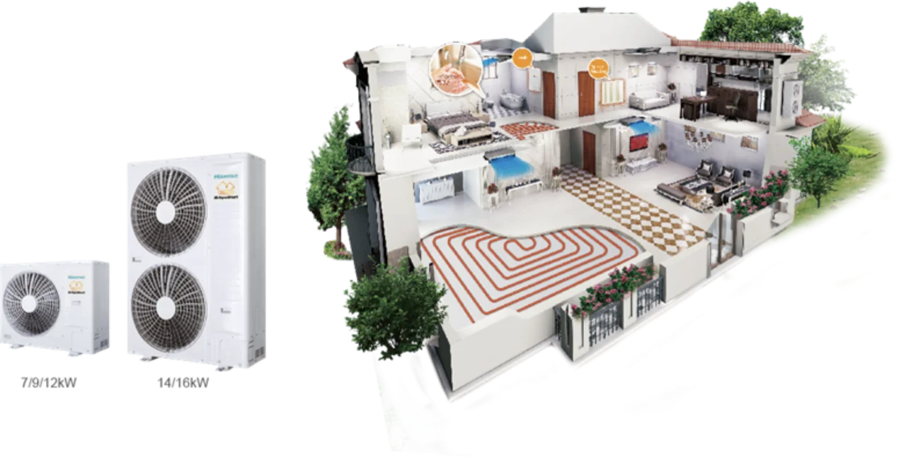
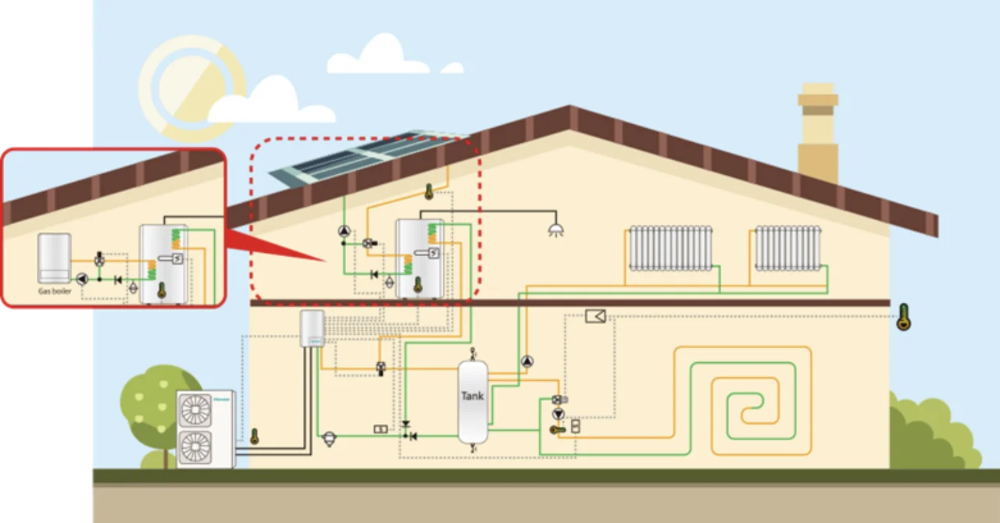

Тепловые насосы воздух-вода Hisense поглощают свободную энергию из внешней атмосферы, что позволяет потреблять меньше электроэнергии для выработки большего количества тепловой энергии. Серия Hi-AquaSmart отличается лучшей производительностью, высокой эффективностью, высокой энергоэффективностью и сокращением выбросов CO2. Модели этой серии можно легко установить в новом здании или уже в существующем. Высокоэффективные тепловые насосы воздух-вода Hisense, очевидно, могут снизить энергопотребление здания. Кроме того, система может работать с традиционным источником нагрева, таким как масляный или газовый котел.
Hisense использует спиральный компрессор с впрыском пара, который обеспечивает более высокую степень сжатия, более плавную подачу масла и более низкий уровень шума.
Система впрыска пара и инверторная технология с плавной регулировкой значительно улучшают систему циркуляции хладагента. Это эффективно увеличивает поток хладагента за счет впрыска пара, тем самым существенно повышая теплопроизводительность.
Использование теплового насоса может значительно сократить выбросы CO2.
Сокращение выбросов CO2
Поскольку тепловые насосы берут свободную энергию из
воздуха, они производят намного меньше CO2.
На 66% меньше, чем электрическое отопление
На 50% меньше, чем масляное отопление
На 30% меньше, чем газовое отопление
По сравнению с другими системами обогрева, работающими на электричестве, газе, угле/масле, солнечной энергии и т. д., тепловые насосы более эффективны, а ежегодное снижение затрат очевидно.
Серия Hi-AquaSmart оснащена высокоэффективным водяным насосом с двигателем постоянного тока (инверторным), который позволяет минимизировать потребление энергии во время работы. Он имеет лучшую линейную управляемость выходной мощностью и более широкую адаптивность для многих областей применения по сравнению с водяным насосом с двигателем переменного тока.
Наружный блок Hi-AquaSmart мощностью 14 кВт может поддерживать номинальную мощность даже при -15 °C без дополнительного электрического нагревателя, а наружный блок мощностью 16 кВт может поддерживать номинальную мощность даже при -10 °C без дополнительного электрического нагревателя. Таким образом, проектировщику не нужно повышать мощность теплового насоса даже при температуре наружного воздуха до -15 °C.
Hi-AquaSmart можно комбинировать с котлом или солнечной батареей, поэтому, несомненно, Hi-AquaSmart станет лучшей альтернативой традиционной котельной в старом здании, а также в качестве резервного решения для нагрева воды для существующего котла. Если один источник тепла по какой-то причине не работает, эта система гарантирует, что система обогрева продолжит работать.
Операционная система
Нулевой потенциал разрушения озонового слоя (ODP)
Более низкий потенциал глобального потепления (GWP)
Меньший объем заряда при той же емкости
Однокомпонентный хладагент, простой в обращении и переработке
Нулевой потенциал разрушения озонового слоя (ODP)
Более низкий потенциал глобального потепления (GWP)
Меньший объем заряда при той же емкости
Однокомпонентный хладагент, простой в обращении и переработке
Система централизованного кондиционирования воздуха Hisense способствует защите окружающей среды и уделяет особое внимание экологическому развитию. Компания стремится создать более здоровую экологическую среду для людей. Таким образом, Интеллектуальный выставочный зал Hisense делает экологию элементом дизайна с темой “Жить интеллектуальной экологической жизнью, наслаждаясь грядущими днями”. Как выставочная зона, так и экологическая концепция проходят через весь выставочный зал, объединяются с системой онлайн-гидов для создания развернутой выставки из четырех элементов, включая бренд, технологии, экологию и обслуживание, а затем демонстрируют всестороннюю силу и качество мастерства Hisense во всех отношениях.
Программа подбора Hisense - это программа на базе Windows, которая может работать на Windows XP и других ОС более высокого уровня. Программа поддерживает несколько языков и удобна для пользователей из разных стран. Пользователи могут легко получать самую новую информацию о продукции, поскольку программа подбора Hisense поддерживает обновление базы данных продукции. Кроме того, эта программа очень интеллектуальна. Она не только поддерживает рисование вручную, но также может автоматически сгенерировать схему трубопроводов устройства, схему подключения и подробный отчет по проекту. Программа также поддерживает вставку строительных чертежей в форматах DWG, PDF, JPG и PNG, а также позволяет выполнить проектирование на основе строительного чертежа.